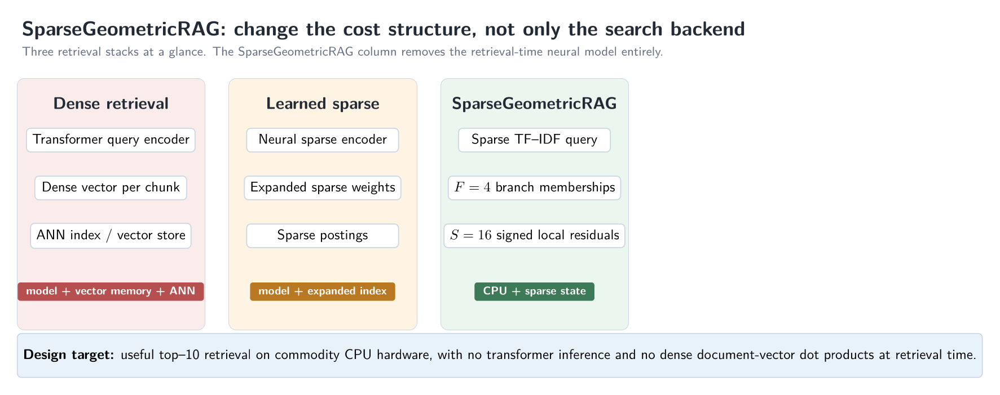
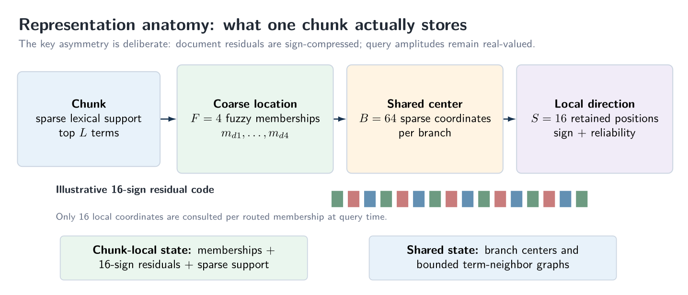
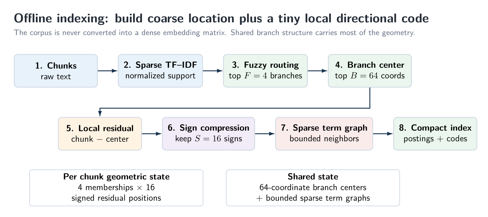
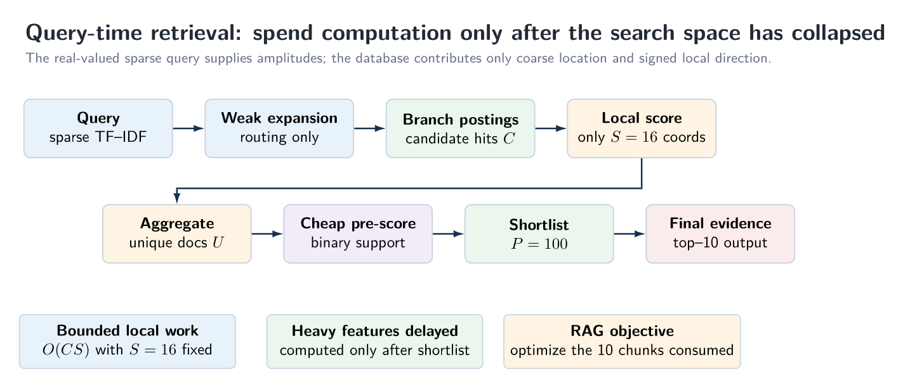
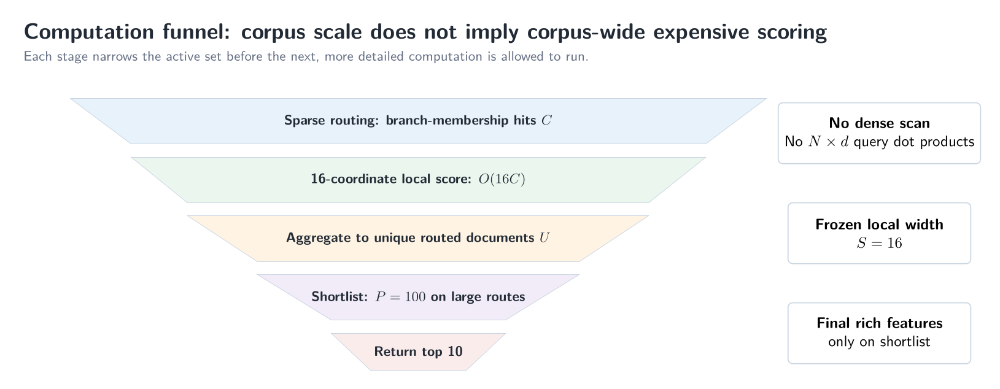
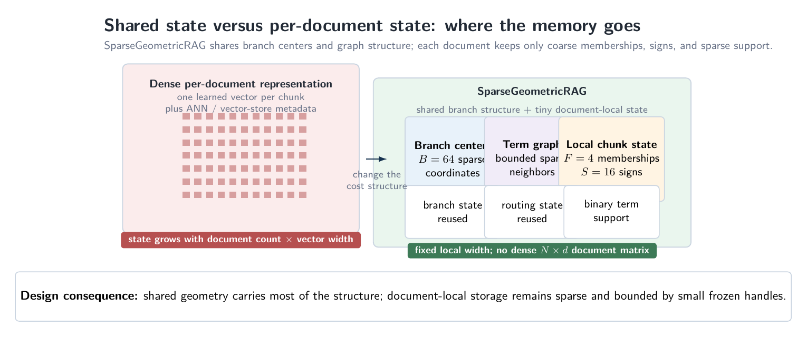
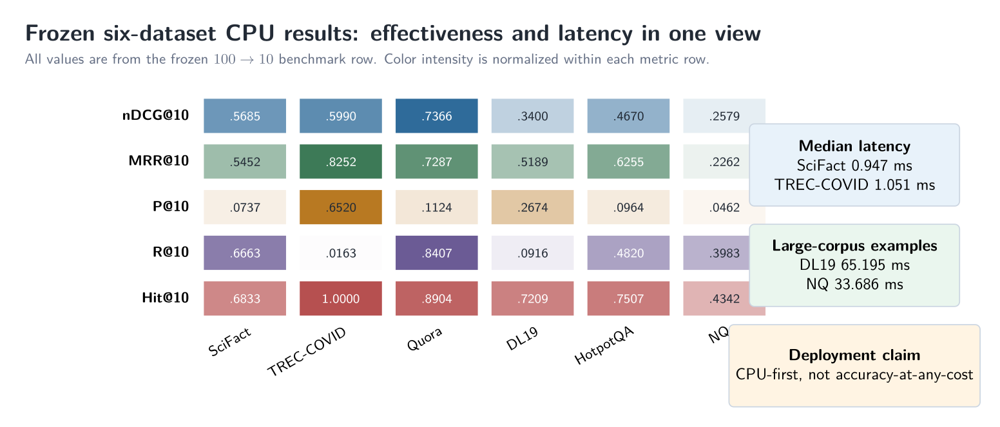
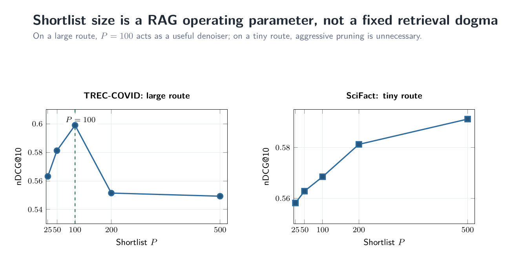
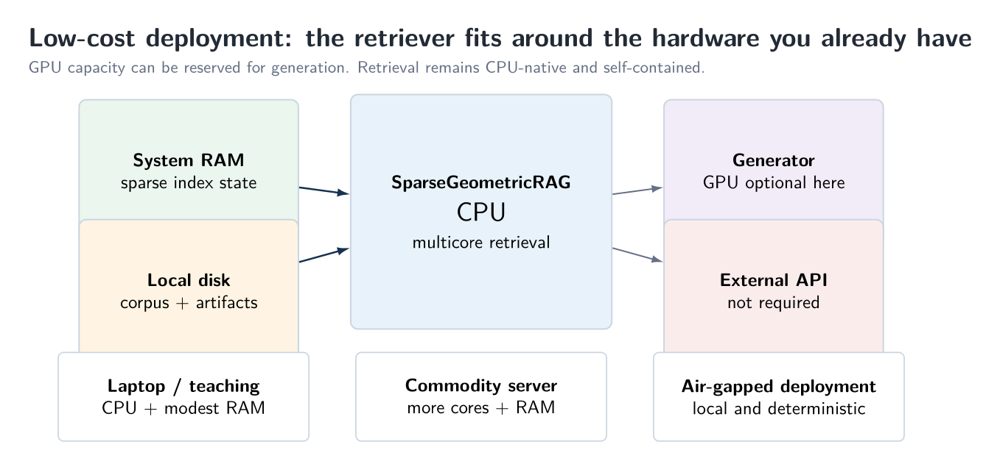
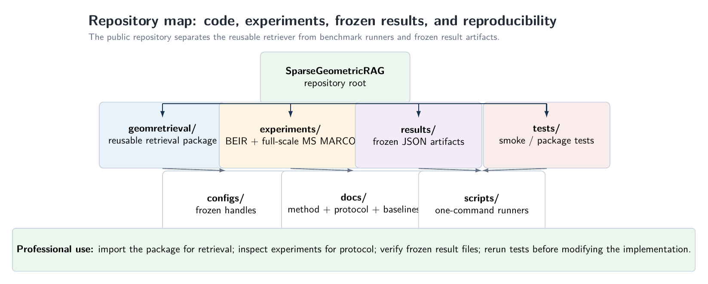

Lightning-Fast RAG on CPU
No training, no learned embeddings, no neural retrieval—just extremely low-complexity retrieval delivering millisecond-scale search on ordinary hardware.
Retrieval-augmented generation has become one of the most practical ways to make large language models useful with private or specialized information. But there is an oddity in the way we usually build RAG systems: before the language model can answer a question, we often introduce another substantial computational system simply to decide which documents the language model should read.
Modern retrieval pipelines can involve learned embedding models, dense document vectors, neural query encoding, approximate nearest-neighbor search, specialized indexes, and sometimes considerable hardware. These techniques can deliver excellent retrieval quality. But they also raise a basic engineering question: does useful retrieval necessarily have to be this computationally expensive?
I wanted to explore the opposite extreme. Suppose the retrieval layer were required to learn absolutely nothing: no training, no fine-tuning, no learned document embeddings, and no neural model evaluating each incoming query. At the same time, suppose the computation had to remain small enough to run comfortably on ordinary CPU hardware—and, eventually, on much smaller edge-class machines.
That experiment became SparseGeometricRAG. Instead of learning how documents should be represented, it extracts structure directly from the corpus and turns retrieval into a small sequence of sparse operations. The result is not an accuracy-at-any-cost system. It is an attempt to push retrieval toward a very different corner of the design space: extremely low complexity, small state, and useful top-10 retrieval at millisecond-scale latency.
The title is intentionally shorthand. The component being made lightning-fast here is the retrieval layer of RAG, not the language model that ultimately generates the answer.
The interesting question is therefore not simply “how fast is it?” It is: how much computation can we remove from retrieval before it stops being useful?

Start by removing learning from retrieval
A dense retriever typically learns or inherits a representation space, maps every document into that space, maps the query into the same space, and then searches through the resulting vectors. Even when approximate search is efficient, the representation itself carries a cost: model inference, embedding storage, index construction, and the operational complexity of keeping the model and index synchronized.
SparseGeometricRAG starts elsewhere. It uses ordinary corpus statistics—primarily sparse TF-IDF structure—and constructs a compact geometric organization of the collection. There are no trained model weights in the retrieval path. There is no gradient descent. There is no embedding model to call for each query. The corpus is analyzed, organized, and indexed; the query then traverses that structure using cheap sparse operations.
“Zero learning” does not mean “zero preprocessing.” Index construction still computes statistics and builds shared structures. The distinction is that the retriever does not fit a predictive model or learn a representation through training. That matters operationally: moving to a new domain does not require fine-tuning a retriever, regenerating neural embeddings because a model changed, or maintaining a query encoder in production.
The basic idea: coarse location plus a tiny local code
The easiest way to understand the index is to forget the mathematical terminology for a moment. Each chunk gets two pieces of geometric information. First, it is assigned to a handful of coarse regions of the sparse corpus space. Second, relative to each region, it keeps a tiny local directional code. The global structure is shared; the per-chunk geometric state stays small.
In the frozen configuration used for the benchmark, each chunk keeps four fuzzy memberships. Each shared region keeps only 64 important coordinates, and each chunk-region membership retains just 16 signed residual positions. In other words, the local comparison is deliberately narrow. The system does not carry a full dense vector for every chunk simply because the corpus is large.

The asymmetry between document and query representations is important. Document residual magnitudes are compressed aggressively; the database mainly keeps direction and reliability. The query remains sparse and real-valued, so it provides the fine-grained amplitudes at runtime. This is one of the places where the implementation saves both storage and arithmetic.
Indexing happens once; expensive work is not repeated per query
Offline, the corpus is tokenized into sparse TF-IDF form. Chunks are routed to their strongest coarse regions. A sparse center is built for each region, and the chunk’s local deviation from that center is compressed to a signed code. A bounded sparse term graph is also constructed to provide a small amount of second-order routing support. None of this requires a neural model.

This indexing phase is where the system earns its low query-time cost. The retrieval path does not rediscover corpus structure for every request. It simply uses the precomputed branch postings, membership weights, sparse support, and local codes.
At query time, computation is spent only after the search space collapses
The query-time pipeline is intentionally staged. A query becomes a sparse TF-IDF vector. A weak, bounded expansion is used only to improve routing. The query touches a small set of branch postings, producing candidate memberships. Each routed candidate is then scored using only the retained 16-coordinate local code.
After that comes document-level aggregation and a cheap lexical pre-score. Only a small shortlist survives to the richer final evidence calculation. The frozen large-route configuration uses a shortlist of 100 candidates and then returns the top 10 chunks for RAG.

This sequencing is more important than any single formula. Many retrieval systems perform a relatively expensive representation or similarity computation over a large candidate space and then optimize that operation. Here, the architecture is designed so that expensive operations are simply not permitted to run until the active set is small.
Why the complexity stays low
Let C be the number of routed chunk-region hits for a query. The local geometric score is O(16C) in the frozen design because the residual support is fixed at 16. Posting traversal is linear in the hits that are actually visited. The shortlist stage then reduces the active set before richer lexical and support features are computed.
The important engineering consequence is that corpus size does not automatically imply corpus-wide expensive scoring. Large collections increase the amount of index state and can increase routing traffic, but the architecture still funnels work through progressively smaller sets.

The storage story is similar. With four memberships and 16 residual positions per membership, the chunk-local geometric layer has a fixed structural width. Branch centers and sparse graph structure are shared. Whole-chunk lexical support is stored sparsely. There is no requirement for an N × d dense document matrix whose width is dictated by an embedding model.
A later optimization branch in the repository also replaces sort-based candidate deduplication by stamp-based O(C) aggregation and introduces a gate before whole-chunk lexical scanning. Those optimizations were developed after the frozen benchmark and are kept separate so that the published benchmark row is not silently altered.

What happened on real retrieval benchmarks?
A lightweight retriever is only interesting if it still retrieves useful material. I therefore tested the frozen 100-to-10 configuration across six standard datasets spanning very different retrieval regimes: SciFact, TREC-COVID, Quora, the full 8.84-million-passage MS MARCO collection evaluated with TREC-DL19 queries, HotpotQA, and Natural Questions.
| Dataset | nDCG@10 | MRR@10 | Recall@10 | Hit@10 | Median ms | p95 ms |
|---|---|---|---|---|---|---|
| SciFact | 0.5685 | 0.5452 | 0.6663 | 0.6833 | 0.947 | 1.031 |
| TREC-COVID | 0.5990 | 0.8252 | 0.0163 | 1.0000 | 1.051 | 1.193 |
| Quora | 0.7366 | 0.7287 | 0.8407 | 0.8904 | 120.301 | 175.494 |
| MS MARCO / DL19 | 0.3400 | 0.5189 | 0.0916 | 0.7209 | 65.195 | 142.647 |
| HotpotQA | 0.4670 | 0.6255 | 0.4820 | 0.7507 | 28.944 | 42.568 |
| NQ | 0.2579 | 0.2262 | 0.3983 | 0.4342 | 33.686 | 44.161 |
Table 1. Frozen SparseGeometricRAG results. Latency is the measured retrieval path used by the reported experiment, not merely an ANN-search microbenchmark.

The headline numbers are the latency figures. On SciFact and TREC-COVID, median query latency is about one millisecond. HotpotQA is about 29 ms and Natural Questions about 34 ms. The TREC-DL19 evaluation over the full 8.84-million-passage MS MARCO corpus has a median of about 65 ms. Quora is slower in this implementation at about 120 ms, which is useful evidence that route structure and candidate behavior still matter.
The quality story needs to be stated just as plainly: the strongest neural retrievers are generally better on pure effectiveness. Modern ColBERT, BGE, SPLADE++, and other learned systems often achieve higher nDCG or recall. SparseGeometricRAG is not claiming otherwise. The point is that the useful-retrieval region extends much farther into the low-compute corner than I expected.
| nDCG@10 | SciFact | TREC-COVID | Quora | MS MARCO / DL19 | HotpotQA | NQ |
|---|---|---|---|---|---|---|
| BM25 | 0.6650 | 0.6560 | 0.7890 | 0.2280 | 0.6030 | 0.3290 |
| BGE-base + Flat | 0.7404 | 0.7807 | 0.8890 | 0.4135 | 0.7260 | 0.5415 |
| Modern ColBERT | 0.7645 | 0.8341 | 0.8754 | 0.4499 | 0.7667 | 0.6169 |
| SparseGeometricRAG | 0.5685 | 0.5990 | 0.7366 | 0.3400 | 0.4670 | 0.2579 |
Table 2. Selected nDCG@10 effectiveness references. These values show the quality side of the tradeoff; they are not a controlled hardware-speed leaderboard.
One result I particularly like is that the full MS MARCO/DL19 run is not a toy-scale demonstration. The index is operating over 8.84 million passages. That is large enough to expose whether the architecture is fundamentally dependent on tiny academic collections. The measured latency remains in the tens of milliseconds on CPU.
The shortlist is a systems parameter, not a sacred constant
The experiments also reinforced a practical point about RAG: the retriever does not need to optimize an abstract deep-recall objective if the generator will only consume ten chunks. The shortlist size P controls how much evidence is allowed into the final reranking stage. On a large route, P = 100 worked well as a useful denoiser; on a tiny route, aggressive pruning can be unnecessary.

This is one reason I prefer to think of the system as a RAG retriever rather than a generic search engine. The final objective is not to return hundreds or thousands of candidates. It is to give a generator a small, useful set of chunks with predictable computational cost.
Why ordinary and edge hardware become realistic
Once the retrieval path is mostly sparse lookup, bounded local scoring, candidate accumulation, and a small final rerank, the hardware story changes naturally. A large accelerator is no longer a prerequisite for the retriever. On a workstation or server, the retrieval layer can stay on CPU while accelerator memory is reserved for the generator. On smaller deployments, the same low-compute design becomes interesting for edge-class hardware.
I have not benchmarked the current release on Raspberry Pi-class hardware, so I do not want to pretend that result already exists. But the direction is straightforward to test: the algorithm was designed around small sparse state and fixed-width local operations rather than dense matrix multiplication. That makes an edge implementation a sensible engineering next step rather than a completely different research problem.

What this approach does not claim
There are three claims I would avoid making. First, this is not the most accurate retriever on every benchmark. Second, “no learning” does not mean “no indexing cost”; corpus statistics and shared structures still have to be built. Third, the latency values should not be mixed casually with search-only ANN latency reported on different hardware after a query embedding already exists.
The repository therefore keeps a benchmark ledger and separates incompatible timing protocols rather than filling every missing cell with a number from somewhere else. In retrieval, speed claims are only meaningful when we know what was timed.
Why I think this is useful
The broader lesson is less about this particular implementation than about system design. We often inherit an expensive representation and then devote enormous effort to accelerating it. Sometimes the more productive question is whether the representation can be changed so that the expensive operation disappears.
SparseGeometricRAG is one attempt at that. It replaces a learned retrieval representation with corpus-derived sparse structure, compresses document-local geometry aggressively, and refuses to spend rich computation until the candidate set has already collapsed. The resulting system gives up some retrieval effectiveness compared with the strongest neural methods, but in return it reaches a hardware and latency regime that is attractive for low-cost RAG deployments.
For practitioners, that tradeoff can be more important than another small gain on a leaderboard. If the retrieval layer can be simple, fast, reproducible, and deployable on the hardware you already have, the entire RAG stack becomes easier to own.
The real speedup comes from avoiding expensive work, not accelerating it.
Try it
The implementation, frozen configurations, experiments, benchmark artifacts, and reproducibility notes are public. The repository includes the full six-dataset benchmark suite rather than only the favorable rows, together with the post-benchmark optimization branch kept separate from the frozen results.
Hugging Face repository: Angshul/SparseGeometricRAG

The most useful next test is not another synthetic benchmark. It is to run the same retriever on different CPUs and edge-class machines, measure where the memory and routing bottlenecks move, and see how much of the current latency survives when the hardware budget becomes genuinely small.
Benchmark values and figures are drawn from the frozen SparseGeometricRAG public release and its benchmark ledger.